卡迪亚：潮与风暴
01游戏概览
两个强大而新生的阵营正在争夺卡迪亚的控制权。它们统御潮汐，让狂暴的风暴在城市上空炸开。
群岛航海者与海洋有极深的联系。他们的船驶向神秘的岛屿，那些岛屿会带来强力的效果。
远征队是一群四处游荡的求知者，他们学会了驾驭风的力量。他们的魔法风瓶赋予他们超凡的能耐。
《潮与风暴》是《卡迪亚对决》的独立续作，沿用同一套基本规则。
每局游戏只用其中一套牌组。本规则先讲牌组 III（群岛）的设置与玩法；牌组 IV 的差异见第 12 章。
更多资讯、常见问题、2v2 规则与比赛规则：www.hans-im-glueck.de/en/cardia-en
02配件
| 配件 | 数量 | 说明 |
|---|---|---|
| 角色卡 | 2 × 32 张 | 牌组 III 与牌组 IV 各 32 张；每套牌组两位玩家各 16 张，牌背不同 |
| 速查卡 | 6 张 | 回合速查卡 ＋ 各阵营速查卡 |
| 地点卡 | 3 张 | 微风、未知水域、浮空群岛 |
| 修正标记 | 28 枚 | 正反两面数值不同：面值 1 的 8 枚、2 的 6 枚、3 的 8 枚、5 的 6 枚 |
| 印记 | 14 枚 | 胜利标记 |
| 持续标记 | 6 枚 | 标记“持续能力已生效” |
| 船 | 3 艘 | 放在岛屿卡上 |
| 风瓶 | 8 个 | 牌组 IV（远征队）专用 |
| 岛屿卡 | 3 张 | 共印有 6 座岛 |
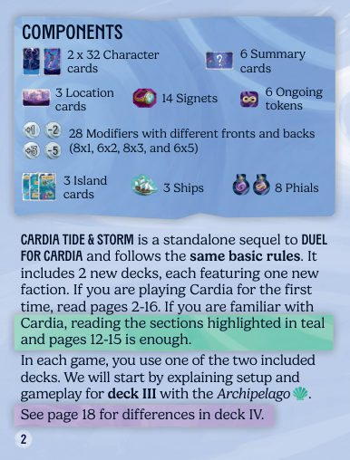
03设置（牌组 III）
- 两人相对而坐。把印记、修正标记与持续标记的供应堆放在桌子的一端。
- 取出所有右下角标着 III 的角色卡。每位玩家拿取牌背样式相同的 16 张。其余标着 IV 牌背的 32 张放回盒中。
- 把自己那 16 张牌面朝下洗混，叠放在面前——这就是你的抽牌堆（下文简称牌堆）。
- 把 3 张岛屿卡按图示排成一行，放在你与对手之间场地的一侧。
- 在印有船形图标的 3 座岛上各放 1 艘船。
- 首局游戏：把微风地点卡正面朝上放在岛屿卡旁。其余地点卡放回盒中（地点卡详见第 13 章）。
- 每人拿 1 张回合速查卡与 1 张群岛速查卡（右上角有标记）。暂时忽略其他速查卡。
- 从牌堆顶抽 5 张作为手牌。
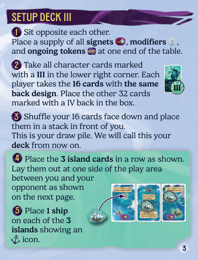
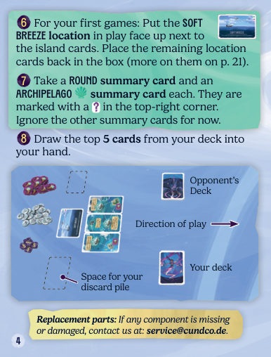
04卡牌
双方的牌组只有牌背不同：每套牌组都是 16 张，数值 1–16 各一张。这个数值叫做该卡的影响力。
每张卡还带有一个能力，并属于某个阵营。每个阵营有自己的颜色与图标。
| 卡面要素 | 含义 |
|---|---|
| 影响力 | 1–16 的数值，比大小用 |
| 名称 | 角色名（如「造船师」「海盗」） |
| 能力 | 该卡被打出并输掉遭遇时发动 |
| 能力类型 | 即时能力 或 持续能力（图标不同） |
| 阵营与牌组编号 | III（群岛）／IV（远征队） |
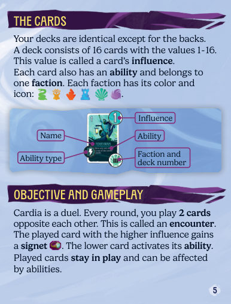
05游戏目标与对局结构
卡迪亚是一场对决。每一轮，双方各打出 1 张牌、彼此相对（合计 2 张）——这称为一次遭遇。
一次遭遇中，影响力较高的那张卡获得 1 枚印记；较低的那张卡发动它的能力。打出的卡留在场上，可能被后续能力影响。
下一轮，双方再次各出 1 张相对，按出牌方向摆在上一次遭遇的旁边，如此延续。
注意：若场上使用微风地点卡，则需要 6 枚印记才能获胜。
已经赢到的印记在游戏过程中可能易主——后文详述。
06回合流程
一局游戏由若干轮组成，直到一方获胜。每一轮按顺序分 3 个阶段：
| 阶段 | 做什么 |
|---|---|
| ① 出牌 | 双方各暗置 1 张，同时翻开，比较影响力 |
| ② 发动能力 | 输掉本次遭遇的那张卡发动能力 |
| ③ 回合结束 | 双方各从牌堆抽 1 张 |
6.1 阶段一：出牌
双方各把 1 张牌面朝下放到桌上，然后同时翻开，比较两张卡。
- 放牌：从手牌中选 1 张，面朝下放到你这一侧的场地。手牌里任何一张都可以选。对手也选 1 张，放在你那张的对面。
- 翻牌：同时翻开两张卡，比较影响力。影响力较高的卡赢得这次遭遇。从供应堆取 1 枚印记放在获胜的卡上。
- 平手：若两张卡影响力相同，本次遭遇平手，没有卡获胜或落败。也就是说这次遭遇不放任何印记。跳过阶段二（发动能力），直接进入阶段三（回合结束）。
6.2 阶段二：发动能力
只有在本次遭遇中输掉的那张卡的所有者，才立刻发动该卡的能力。
你必须尽可能完整地结算被发动的能力，包括它对其他卡造成的一切后果。结算方式就是照卡面文字执行。
能力分两类，图标不同：即时能力与持续能力。有些能力会改变卡的影响力（见第 08 章）。
6.3 阶段三：回合结束
回合结束时，双方各从自己的牌堆抽 1 张加入手牌。
如果牌堆已空，就不能再抽。不要洗回弃牌堆。抽不到牌不会让你输掉游戏。
然后从阶段一开始新的轮次。
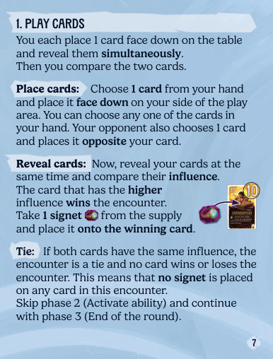
07即时能力与持续能力
7.1 即时能力
发动即时能力时，立刻结算一次，然后结束。
7.2 持续能力
发动持续能力时，在该卡上放 1 枚持续标记。该能力从此持续生效。
即使这张卡之后在游戏中赢下了自己的遭遇，能力仍然生效。
如果所有持续标记都被移除，该持续能力停止生效。一旦某个持续能力停止生效，必须立刻结算由此引发的所有变化（包括过去遭遇里的变化）。
你发动自己秘术师（4）的能力：此卡影响力为 0 或更低时，价值 2 枚印记。你在秘术师上放 1 枚持续标记。只要标记还在，该能力就生效。
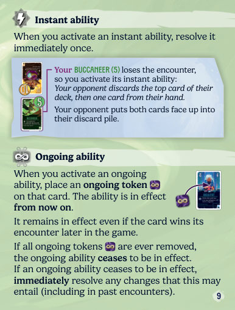
08修正影响力
有些能力允许你修正某张卡的影响力。发动这类能力时，从供应堆取标示数值的修正标记，放到对应的卡上。
卡上所有修正标记的数值立刻加进（或减出）该卡的影响力。只要标记还留在卡上，它们就持续修正该卡的影响力。
如果因此改变了某次遭遇的结果，把印记移给现在获胜的那张卡。若变成平手，把印记退回供应堆。
你把杂耍者身上的修正标记翻倍（+3 变成 +6），全部移到造船师（7）上。造船师现在影响力 13。于是你把印记从对手的移潮者（8）移到自己的造船师（13）上。移潮者的能力不会被发动。
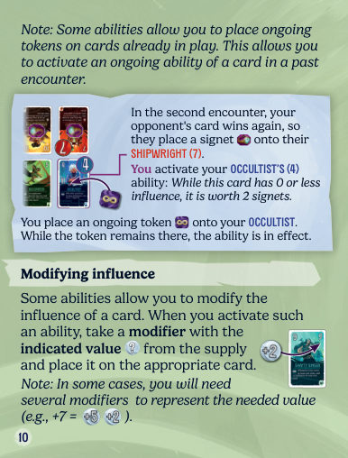
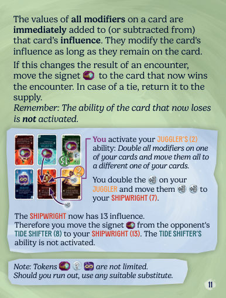
09船与岛屿
岛屿卡上共印有 6 座岛。你通过发动群岛卡的能力，把船从一座岛移到另一座岛。
被一条线连起来的两座岛互为相邻。
岛屿卡的摆法使得其中一座岛离你最近、另一座离对手最近。你可以把船推离自己，也可以把船拉向自己。
| 动作 | 效果 |
|---|---|
| 推船 | 把任意 1 艘船移到一座远离你的相邻岛 |
| 拉船 | 把任意 1 艘船移到一座靠近你的相邻岛 |
9.1 移动细则
- 如果所需方向上有多座相邻岛，由你决定把船推到／拉到哪一座。
- 即使目标岛上已有一艘或多艘船，你仍然可以把船移过去。
- 有些能力允许你直接把船移到指定的岛。这种情况下，目标岛不必与当前岛相邻。
你发动一个允许拉船的能力：如果选这艘船，那么只有你这一侧的岛是唯一可拉去的目标。
9.2 你的岛
离你最近的那座岛就是你的岛。你不能把船从你的岛再往自己这边拉；同样，你也不能把对手岛上的船再往外推。
9.3 岛屿效果
每座岛都有自己的效果。每当你移动了一艘或多艘船，至少有 1 艘船在其上结束移动的每座岛，都会发动它的效果。
如果因此要发动不止一个岛屿效果，由你决定顺序。
| 岛 | 效果 |
|---|---|
| 你的岛 | 只要船停在这里，每艘船对你价值 1 枚印记 |
| 对手的岛 | 只要船停在那里，每艘船对对手价值 1 枚印记 |
除上述之外，这两座岛没有其他效果。
你发动该岛效果，选择领航员。由于这座岛上有 2 艘船，你给领航员 +4 影响力。它现在影响力 7，击败了对手的走私者（6），赢下这次遭遇。
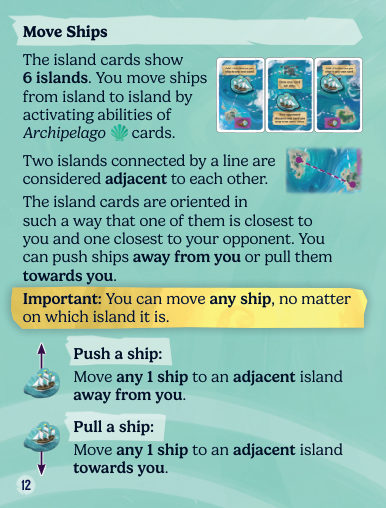
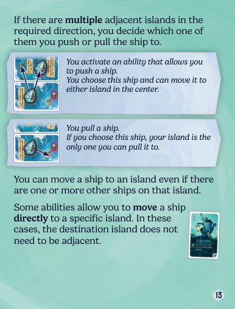
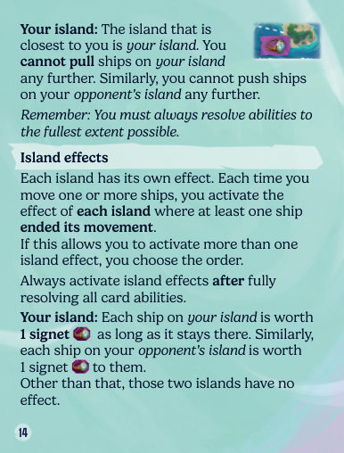
10游戏结束
只要满足下列任一条件，游戏立刻结束，你获胜：
| 阶段 | 条件 |
|---|---|
| 阶段一 | 对手无法打出任何卡 |
| 阶段二 | 你发动了某个声明你获胜的能力 |
| 阶段三 | 回合结束时，你卡上的印记（含你岛上的船）达到 5 枚或更多 |
平手：如果阶段三时双方印记数相同（且都至少 5 枚），继续游戏，直到一方印记多于另一方，或以其他方式获胜。
特殊情况：如果阶段一时双方都无法出牌，则印记较多的一方获胜；若印记相同，则为平局。
11完整回合示例
你的速查卡上有各种提示与提醒，帮助你打完第一局。若遇到疑问，可查〈关键词〉或各牌组的澄清章节。
等你熟悉了游戏，再往下读，看看有哪些可以变化的花样。
阶段二：你发动制图师（10）的能力：发动你某张已打出、且影响力低于此卡的卡的能力。你选择船歌歌手（9），发动它的能力，并在它上面放 1 枚持续标记。它的持续能力从此生效。
阶段三：双方各从牌堆抽 1 张。
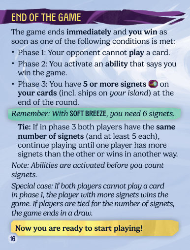
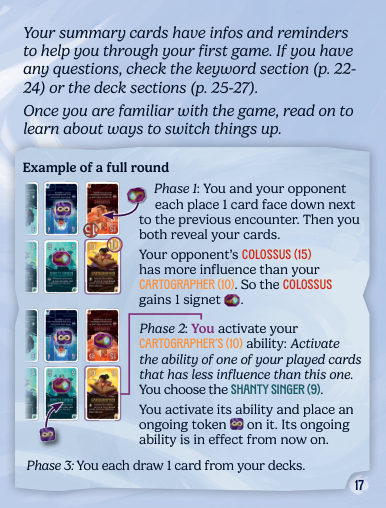
12牌组 IV：远征队
你可以改用牌组 IV 代替牌组 III。新阵营远征队使用风瓶来发动强力能力。
12.1 设置（牌组 IV）
- 把牌组 III、岛屿卡、船与群岛速查卡放回盒中。
- 取出标着 IV 的 32 张卡，照常分成两套牌组。
- 每人拿 4 个风瓶，放在自己面前作为个人供应。
- 第一次玩牌组 IV 时，建议同样使用「微风」地点卡。
- 每人拿 1 张远征队速查卡。
- 其余设置步骤完全相同。
12.2 风瓶总览
| 项目 | 规则 |
|---|---|
| 设置 | 每位玩家 4 个风瓶 |
| 放置 | 从你的供应取。若供应已空，则移动一枚风瓶 |
| 夺取 | 从对手的卡上或供应取 |
| 风瓶能力 | 把风瓶放到卡上时发动 |
牌组 IV 中，印有风瓶能力的卡是数值 2、4、5、7、10、12、13、15 的那几张。
12.3 两张能力
每张远征队卡有 2 个能力：
- 上方能力是即时能力，照常在该卡输掉遭遇时发动。
- 下方能力是风瓶能力，靠在该卡上放 1 个风瓶来发动。
放置风瓶：从你的供应取 1 个风瓶，按你刚发动的那项能力放到对应的卡上。如果供应里没有风瓶了，你必须从自己另一张卡上移动一个风瓶过来。
夺取风瓶：从对手的某张卡上或对手的供应里取 1 个风瓶，按你刚发动的那项能力放置。
特殊情况：如果你或对手在卡上与供应里都没有足够的风瓶，则不放置也不移动风瓶。
12.4 风瓶能力
风瓶能力有两类。二者都遵循一般的能力规则，但只由风瓶触发。把风瓶放到某张卡上时，立刻发动该卡的风瓶能力。
| 类型 | 规则 |
|---|---|
| 风瓶即时能力 | 每次你在该卡上放风瓶，就发动一次该能力 |
| 风瓶持续能力 | 只要该卡上至少还有 1 个风瓶，能力就持续生效。放置时把风瓶以持续图标朝上摆放，表示该能力正在生效 |
你把风瓶放在驯鹰师本身上，从而发动它的风瓶持续能力：上一次遭遇视为平手。于是你把上一次遭遇中篡位者身上的印记移除。
间谍：对手弃掉牌堆顶 1 张牌，复制并发动它的即时能力。
恶棍：弃掉对面那张卡，对手须用手牌中的 1 张替换它。
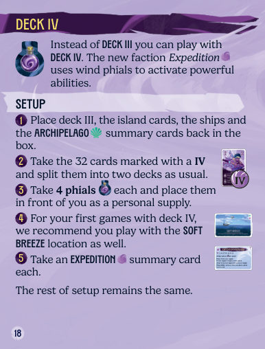
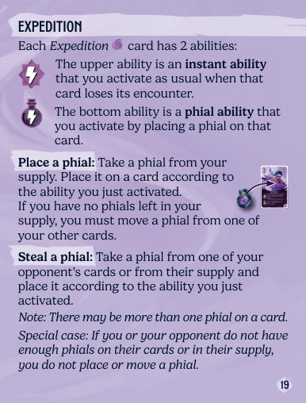
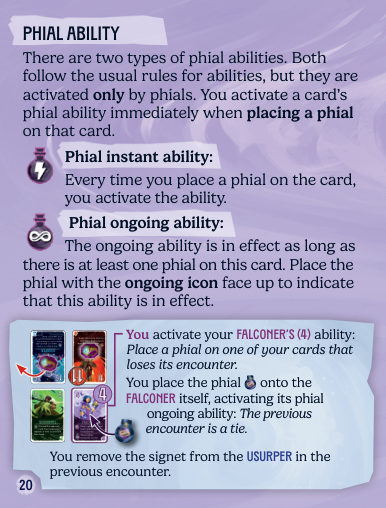
13地点卡
打过几局之后，你可以用地点卡来加点变化。每张地点卡都有一条整局有效的规则。
- 玩群岛时，用未知水域；玩远征队时，用浮空群岛。
- 此外建议同时使用微风。
每张地点的难度，由右上角的图标数量表示。
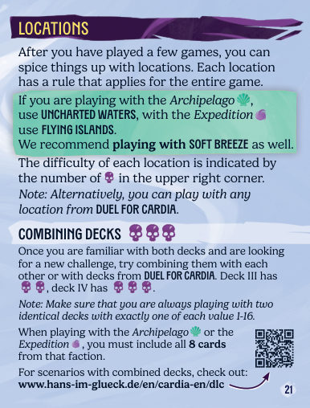
14混组
当你对两套牌组都熟悉了、想找点新挑战时，可以把它们彼此混合，或与《卡迪亚对决》的牌组混合。牌组 III 的混合难度是 2 个骷髅，牌组 IV 是 3 个骷髅（本节标题旁一共画了 4 个骷髅，标示这种玩法的整体难度）。
使用群岛或远征队时，必须把它们那个阵营的全部 8 张卡都包含进去。
混组的各种剧本见：www.hans-im-glueck.de/en/cardia-en/dlc
15关键词
15.1 影响力
- 游戏过程中任何时刻，只要某张卡的影响力（含修正标记）超过了对面那张卡，就把印记放到影响力较高的卡上，并把对面那张卡上的印记退回供应堆。
- 同一张卡上的多个修正标记（正负都算）立刻相加。卡上只放合计值。一张卡的总影响力可以是负数。
- 如果某个能力给「你下一张打出的卡」加修正，就把该修正标记放在你当前遭遇那张卡的出牌方向一侧旁边。你一翻出下一张卡，就立刻把这个标记放上去。修正立刻计入新卡的影响力，并且在阶段一比较时就已经生效。
你把「+3」放在你那张卡旁、把「−3」放在对手那张卡旁，都位于出牌方向上。
你不能给手牌、牌堆或弃牌堆里的卡放修正标记。
15.2 弃牌
有些能力会强制你弃掉已打出的卡，或手牌、牌堆里的卡。被弃掉的卡不能再被打出。
- 弃掉的卡正面朝上放进你的弃牌堆。被弃卡上的任何标记都退回供应堆。你与对手的弃牌堆，任何时候都可以翻看。
- 如果某次过去遭遇的两张卡都被弃掉，就把之后所有遭遇的卡逆着出牌方向平移过来，填补空位。
- 如果强制你弃掉手牌，由你决定弃哪一张。
15.3 复制并发动／发动
| 用语 | 含义 |
|---|---|
| 复制并发动 | 你复制另一张卡的能力，并当作该能力就印在这张卡上那样发动它 |
| 发动 | 你发动另一张卡的能力（按那张卡所在的位置结算）。若发动的是持续能力，照常在那张卡上放持续标记 |
15.4 位置相关用语
| 用语 | 定义 |
|---|---|
| 已打出的卡 | 场上正面朝上的卡（含当前遭遇）。被弃掉的卡不再算已打出的卡。「你的一张已打出的卡」必须是位于你这一侧的卡；「任意一张卡」可以是你的，也可以是对手的 |
| 上一次遭遇 | 紧挨着这次遭遇、位于逆出牌方向的那一组 |
| 过去遭遇 | 在这次遭遇之前、位于逆出牌方向的所有已在场遭遇 |
| 后续遭遇 | 位于出牌方向上、紧跟这次遭遇的那一组（不是尚未打出的“下一次遭遇”） |
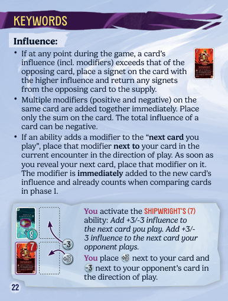
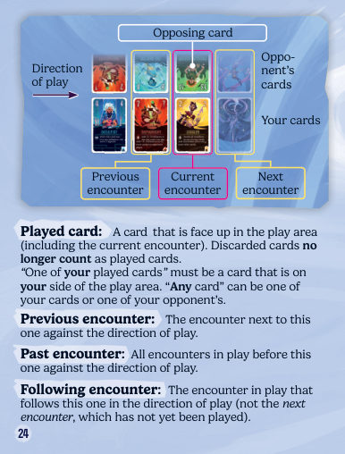
16牌组 III 卡牌澄清
| 卡（英） | 澄清 |
|---|---|
| 杂耍者 Juggler | 你先取走所选卡上的全部修正标记、把它们翻倍，然后全部放到另一张卡上。如果你翻倍的是负影响力，它仍然是负数。 |
| 移潮者 Tide Shifter | 你可以把所选那艘船拉一次或两次。无论拉几次，你只发动船结束移动时所在那座岛的效果。 |
| 船歌歌手 Shanty Singer | 你在移动一艘或多艘船之后、发动岛屿效果之前，立刻放上 +2 修正。即使同一轮里多次移船，这些修正也只放一次。 |
| 走私者 Smuggler | 「对手那一侧」＝离对手最近的那张岛屿卡上的两座岛。 |
| 摆渡人 Ferryman | 你也可以选择把船从一座中央岛移到另一座中央岛。 |
| 制图师 Cartographer | 你照常结算所选卡的能力。该能力中提到的任何位置，都以那张卡为参照，而不是以制图师为参照（见 15.3）。你可以选择发动持续能力。 |
| 导师 Mentor | 你发动自己那张带持续能力、且离当前遭遇最近（即“最后”）的卡。此处的「最后」指卡的位置，不是它被打出的时点。若目标卡上已有持续标记，就再放一枚。如果你没有任何带持续能力的已打出卡，则什么也不发生。 |
| 塞壬 Siren | 你只能选 1 座岛，并且必须把那里的所有船作为一组移到另 1 座岛。即使你因此移了不止一艘船，目标岛的效果也只发动一次。「每艘船」那部分照常结算。你可以选择你自己的岛。 |
| 海之女神 Goddess of the Sea | 由于这是持续能力，你在此次遭遇左、右两侧的遭遇（凡你打出了群岛卡的）也都获胜，含平手。 如果双方都发动了海之女神的能力、且在同一遭遇中都打出了群岛卡，那么两张卡都获胜。若该能力停止生效，把因它放置的所有印记移除。 |
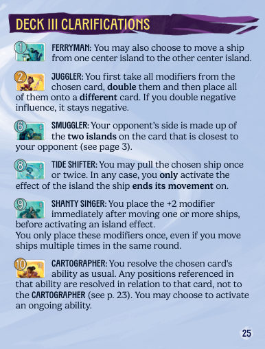
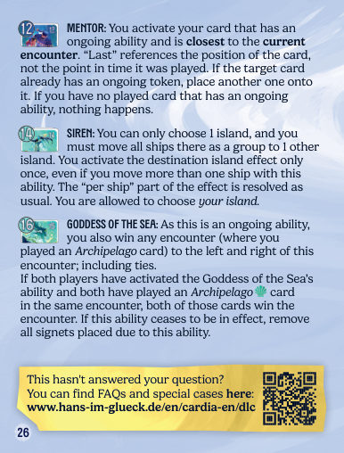
17牌组 IV 卡牌澄清
| 卡（英） | 澄清 |
|---|---|
| 伪造师 Forger | 不要发动新卡的即时能力。把 −3 修正放到那张新卡上。 |
| 催眠师 Mesmerizer | 被交换的两张卡上的标记，留在各自原来的卡上。 |
| 恶棍 Scoundrel | 如果对手手上没有卡，你获胜。 |
| 间谍 Spy | 你不能复制并发动风瓶即时能力。如果被弃掉的那张卡没有即时能力，则什么也不发生。 |
| 风语者 Wind Whisperer | 使用这个风瓶能力时，你不能发动上一张卡上的风瓶能力。 |
| 变形者 Shapeshifter | 你不能复制并发动风瓶即时能力。如果对面那张卡没有即时能力，则什么也不发生。 |
| 女族长 Matriarch | 你先放好两个风瓶，然后按任意顺序结算被发动的能力。不能把两个偷来的风瓶放在同一张卡上。 风瓶能力：你卡上的每个风瓶价值 +5 影响力，不论哪一面朝上。 |
| 篡位者 Usurper | 不发动新卡的即时能力。如果对手手牌不足以替换两张，你获胜。 |
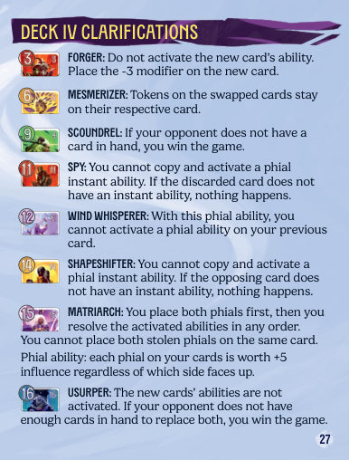
A术语
| 术语 | 含义 |
|---|---|
| 影响力 | 卡牌 1–16 的数值，也可被修正标记临时改变 |
| 遭遇 | 双方各打出 1 张牌、彼此相对的一组。整局会沿出牌方向排成一列 |
| 印记 | 赢得遭遇的奖励，5 枚（微风下 6 枚）即获胜 |
| 修正标记 | 改变影响力的标记，面值 1／2／3／5，正反两面数值不同 |
| 持续标记 | 表示某张卡的持续能力正在生效 |
| 即时能力 | 发动时立刻结算一次的能力 |
| 持续能力 | 放了持续标记后一直生效的能力 |
| 风瓶 | 远征队的资源，放在卡上以发动风瓶能力 |
| 风瓶能力 | 只有放风瓶才触发的能力，分即时与持续两类 |
| 已打出的卡 | 场上正面朝上的卡（含当前遭遇） |
| 上一次遭遇 | 紧挨本次、位于逆出牌方向的那一组 |
| 过去遭遇 | 本次之前的所有已在场遭遇 |
| 后续遭遇 | 出牌方向上紧跟本次的那一组（下一次尚未打出的不算） |
| 复制并发动 | 把别人的能力当作印在本卡上那样发动 |
| 发动 | 按目标卡所在位置发动它的能力 |
| 推／拉 | 把船移到远离你／靠近你的相邻岛 |
| 你的岛 | 离你最近的那座岛，船在此对你各值 1 枚印记 |
| 岛屿效果 | 船在其上结束移动时发动，在所有卡牌能力结算完之后处理 |
| 地点卡 | 整局有效的额外规则，右上角图标数量表示难度 |
B制作名单
设计：Mathieu Rivero、Faouzi Boughida
平面设计：Franz-Georg Stämmele、Alena Rolinski
编辑：Willi Fabienke、Alena Rolinski、HiG
英文翻译：Stephan Rothschuh
插画：Giovanni Calore、Florian Herold、Qistina Khalidah、Martin Mottet、Jonas Schmutzler、Nat Spengler
| 插画师 | 负责 |
|---|---|
| Giovanni Calore | 封面、移潮者、制图师、导师、塞壬 |
| Florian Herold | 岛屿卡、微风、未知水域、浮空群岛 |
| Qistina Khalidah | 海盗、走私者、船歌歌手、巨像、谄媚者、引水员、风语者、变形者 |
| Martin Mottet | 绑架者、探险家、恶棍、女族长 |
| Jonas Schmutzler | 牌背、摆渡人、领航员、造船师、海之女神、伪造师、移云者、驯暴者、篡位者 |
| Nat Spengler | 秘术师、海军上将、寻宝者、斥候、驯鹰师、催眠师、间谍 |
© 2026 Hans im Glück Verlags-GmbH Birnauer Str. 15, 80809 Munich, Germany
info@hans-im-glueck.de www.hans-im-glueck.de/en 规则版本 V1